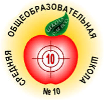

Основная информация
Приветствуем тебя дорогой друг!
Добро пожаловать на сайт «Десяточки»!
График работы:
Начальная школа — ПН-ПТ (пятидневка);
5-11 классы: ПН-СБ (шестидневка).
Режим работы школы:
Учащиеся школы занимаются в две смены
Продолжительность урока – 40 минут.
Занятия в 1, 4, 5, 8, 9,10,11 классах проводятся в первую смену.
Во вторую смену проходят занятия во 2, 3, 6, 7 классах.
Режим занятий обучающихся МАОУ СОШ№10 Согласно Постановлению Администрации города Кунгура №258-171-01-09 от 08.05.2019г. «О реорганизации муниципального автономного общеобразовательного учреждения «Начальная школа-детский сад №15» в форме присоединения к муниципальному автономному общеобразовательному учреждению «Средняя общеобразовательная школа №10» добавились учебные корпуса: Главный корпус (школа) В образовательном процессе главного корпуса задействованы 32 учебных кабинета основного здания и здания пристроя, библиотечно-информационный центр, спортивный зал, актовый зал, столовая на 143 посадочных места, лицензированный медицинский блок, гардеробные для учащихся и учителей, 8 санузлов. Здесь занимаются обучающиеся начальной, основной и старшей школы (41 класс).
Корпус №1 (детский сад),№ 2 (детский сад), №3 (начальная школа), которые расположены в трех двухэтажных зданиях общей площадью -1696,1 кв.м., куда входят 5 начальных классов, 9 дошкольных групп с отдельными приемными и спальными комнатами. В зданиях детских садов для детей оборудован спортивный зал, 2 музыкальных зала, кабинеты психолога, учителя-логопеда, методиста, медицинский блок, пищеблок, соответствующий санитарным нормам и требованиям. На территории имеются прогулочные участки с верандами и оборудованием, хозяйственный двор. В здании начальной школы 4 учебных класса, 1 класс иностранного языка, спортивный зал, столовая, учительская, библиотека, медицинский блок, соответствующий санитарным нормам и требованиям, спортивный участок.
Расписание уроков
1 урок 8:30-9:15
2 урок 9:20-10:05
3 урок 10:15-11:00
4 урок 11:10-11:55
5 урок 12:05-12:50
6 урок 13:00-13:45
7 урок 13:55-14:40
8 урок 14:50-15:35
9 урок 15:45-16:30
10 урок 16:40-17:20
11 урок 17:25-18:05
12 урок 18:10-18:50
Образование
Уровень образования:
Уровень начального общего образования (1-4 класс);
Уровень основного общего образования (5-9 класс);
Уровень среднего общего образования (10-11 класс).
Форма обучения:
В организации (очная);
Вне организации (самообразование, семейное образование).
Нормативный срок обучения:
Уровень начального общего образования (нормативный срок освоения 4 года)
Уровень основного общего образования (нормативный срок освоения 5 лет);
Уровень среднего общего образования (нормативный срок освоения 2 года).
Численность обучающихся: 1273 учащихся
Уровень начального общего образования — 580;
Уровень основного общего образования – 586;
Уровень среднего общего образования – 107.
Контакты
Наши координаты
Пермский край, г.Кунгур, ул. Карла Маркса, 23
Телефон: (8 – 34271) 29632, (8 – 34271) 29633
e-mail: school10-ku@yandex.ru
сайт: school10-kungur.ru